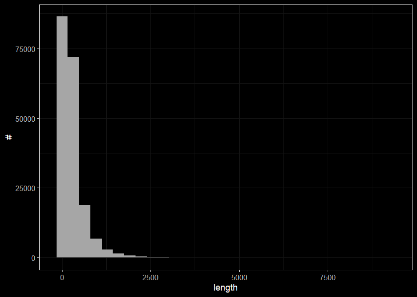

2 Explore FWA Streams
Purpose of this section was to explore the lengths and frequencies of double lined streams as there is a channel width predictor model channel-width-21. Result of this work was that Simon has sampled each double line stream 30 times and kept the average and standard deviation - regarless of segment length bcfishpass.
Load the double line streams used in channel_width_mapped. In order to facilitate reproducability lets save the streams in a sqlite and pull them back in.
##gconnect to database
conn <- DBI::dbConnect(
RPostgres::Postgres(),
dbname = dbname_wsl,
host = host_wsl,
port = port_wsl,
user = user_wsl,
password = password_wsl
)
##get the segments that have a centreline (double line streams)
q <- ("SELECT linear_feature_id, ceil(upstream_route_measure)::integer - floor(downstream_route_measure)::integer AS len,
watershed_group_code
FROM whse_basemapping.fwa_stream_networks_sp
WHERE edge_type = 1250")
streams <- sf::st_read(conn, query = q)
## the streams in a sqlite and pull them back in.
##########################!!!!!!!!!!!!!!!!!!!!!!!!!!!!!!!!!!!#########################
###change this up so that it matches your version of the ahred dropbox!
shared_dropbox_dir <- "C:/Users/al/Dropbox/New Graph/"
mydb <- DBI::dbConnect(RSQLite::SQLite(), paste0(shared_dropbox_dir, "fiss/fissr_explore.sqlite"))
conn <- readwritesqlite::rws_connect(paste0(shared_dropbox_dir, "fiss/fissr_explore.sqlite"))
readwritesqlite::rws_write(streams, exists = F, delete = TRUE,
conn = conn, x_name = "whse_basemapping.fwa_stream_networks_sp")
readwritesqlite::rws_list_tables(conn)
readwritesqlite::rws_disconnect(conn)Load the streams from sqlite. The table I pull back in after saving as sqlite has linear_feature_id as integer vs int64 as it was pulled from postgres. No issues for this exercise though…
conn <- readwritesqlite::rws_connect(paste0(shared_dropbox_dir, "fiss/fissr_explore.sqlite"))
streams2 <- readwritesqlite::rws_read_table("whse_basemapping.fwa_stream_networks_sp", conn = conn)
readwritesqlite::rws_disconnect(conn)summary(streams$len)## Min. 1st Qu. Median Mean 3rd Qu. Max.
## 1.0 86.0 181.0 294.5 362.0 9253.0Lets look at distribution of lengths
ggplot(select(streams, len), aes(x=len)) +
geom_histogram(position="identity", size = 0.75)+
labs(x = "length", y = "#") +
ggdark::dark_theme_bw(base_size = 11)##segments less than 1000m long
ggplot(select(streams, len) %>% filter(len < 1000), aes(x=len)) +
geom_histogram(position="identity", size = 0.75)+
labs(x = "length", y = "#") +
ggdark::dark_theme_bw(base_size = 11)
##segments less than 250m long
ggplot(select(streams, len) %>% filter(len < 250), aes(x=len)) +
geom_histogram(position="identity", size = 0.75)+
labs(x = "length", y = "#") +
ggdark::dark_theme_bw(base_size = 11)##how many streams are segments are smaller than 50m
streams %>%
filter(len > 1000) %>%
count()## n
## 1 8286streams_equal <- streams %>%
mutate(cut = cut_number(len, n = 5)) %>%
group_by(cut) %>%
summarise(n = n())
streams_equal## # A tibble: 5 x 2
## cut n
## <fct> <int>
## 1 [1,70] 38500
## 2 (70,138] 38232
## 3 (138,235] 37768
## 4 (235,427] 38064
## 5 (427,9.25e+03] 38099streams_interval <- streams %>%
mutate(cut = cut_interval(len, n = 10)) %>%
group_by(cut) %>%
summarise(n = n())
streams_interval## # A tibble: 10 x 2
## cut n
## <fct> <int>
## 1 [1,926] 180821
## 2 (926,1.85e+03] 8096
## 3 (1.85e+03,2.78e+03] 1296
## 4 (2.78e+03,3.7e+03] 294
## 5 (3.7e+03,4.63e+03] 90
## 6 (4.63e+03,5.55e+03] 33
## 7 (5.55e+03,6.48e+03] 21
## 8 (6.48e+03,7.4e+03] 7
## 9 (7.4e+03,8.33e+03] 4
## 10 (8.33e+03,9.25e+03] 1streams_length <- streams %>%
mutate(cut =
case_when(
len < 100 ~ '0_100',
len >= 100 & len < 500 ~ '0100_500',
len >= 500 & len < 999 ~ '0500_1000',
len >=999 ~ '1000+'))
streams_length_sum <- streams_length %>%
group_by(cut) %>%
summarise(n = n())
streams_length_sum## # A tibble: 4 x 2
## cut n
## <chr> <int>
## 1 0_100 55821
## 2 0100_500 104540
## 3 0500_1000 21988
## 4 1000+ 8314ggplot(data = streams_length_sum, mapping = aes(x=cut, y = n)) +
geom_bar(stat = "identity") +
# ylim(1000, 20000)+
# labs(x='test') +
ggdark::dark_theme_bw(base_size = 11)ggplot(streams_length, aes(x=len)) +
geom_histogram(position="identity", size = 0.75)+
labs(x = "length", y = "#") +
facet_wrap(~cut, ncol = 2, scales = "free")+
ggdark::dark_theme_bw(base_size = 11)